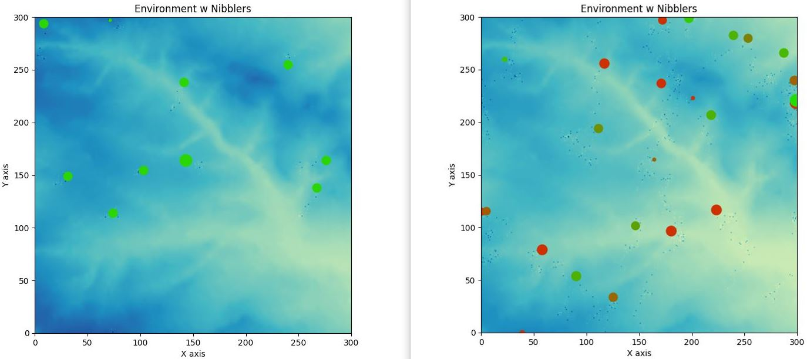

GEOG5990M Programming for Geographical Information Analysis: Portfolio Assessment
About the 'Nibbler' Program
Link to the GitHub page: GitHub 'Nibblers' Program
This Python program was generated for the University of Leeds MSc GIS Python programming module portfolio.
The program simulates agents/'Nibblers' which exist atop a DTM converted into a two dimensional environment. The nibblers exectute a number of tasks based on random chance such as: eating/grazing the environment beneath them, sharing stored food with one another, excreting back to the environment, moving randomly, indepentantly aging and slowing down with age, and even reproducing when certain requirements are met. While currently simple the framework exists within this model to build into real-world simulations such as bacteria cultures or floral growth.

While the interface is simple it does display/feedback events to the user such as the age of the Nibblers (Green = young/0 - Red = old/300), their position as they move, when they have reproduced (Blue ring around birthing Nibbler), their deaths and wasting away, among others. Additionally, within Python the number of Births and Deaths are recorded to monitor the communities growth. The left image of the figure displays the model early in the iterations while the right shows it later through a run.
The TKinter GUI allows for a user to Run and Stop the model at any point. When accesssing the model.py file the user can also change a number of variables to examin the Nibblers at varying settings by changing their age, movement rate, environment consumed, range from one another, etc...